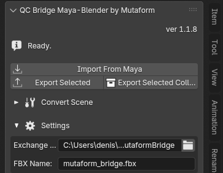

QC Bridge Maya ↔ Blender¶
Moving scenes between Blender and Maya over FBX without setting paths and export options by hand every time. Both sides watch the same exchange folder: one writes, the other reads.
The bridge has two halves and you need both — the extension in Blender and the scripts in Maya.

Installing in Blender¶
Edit → Preferences → Get Extensions- Gear icon →
Repositories→+→Add Remote Repository -
The URL:
-
Install
QC Bridge Maya-Blender by Mutaform
Panel: N in the viewport → QC Maya Bridge tab. Requires Blender 4.2 or newer.
Installing in Maya¶
- Close Maya.
- Download mutaform_bridge_maya_v1.zip and unpack it.
-
Put the
mutaform_bridgefolder from the archive here:You should end up with
...\scripts\mutaform_bridge\. -
Start Maya, open
Windows → General Editors → Script Editorand switch to the Python tab. -
Paste and run this, with your own username:
A bridge button appears on the shelf. This is a one-time setup.
The exchange folder¶
The Settings fold in the Blender panel:
- Exchange Folder — the shared folder,
Documents\MutaformBridgeby default; - FBX Name — the file name,
mutaform_bridge.fbxby default.
The one requirement: Blender and Maya must point at the same folder. If a transfer does nothing, check that first.
The .fbx extension is appended automatically if you leave it out.
Transferring¶
Blender to Maya:
- Export Selected — the selected objects;
- Export Selected Coll… — the selected collection, structure included.
Maya to Blender — Import From Maya, once Maya has written the file from its shelf button.
The ⓘ row at the top of the panel reports the last operation; it reads Ready.
to start with. Error messages land there too, and that is the first place to
look when it seems nothing happened.
Groups and collections¶
Maya builds hierarchy out of transform nodes, Blender out of collections. Over FBX, Maya groups arrive as empties, which are awkward to work with.
Both conversions live under the Convert Scene fold, collapsed by default.
- Convert Maya Empties to Collections — turns an incoming hierarchy of empties into proper Blender collections.
- Convert Collections to Maya Empties — the reverse, before sending.
Both let you choose a scope — whole scene, selection, or the active object. The Bake Transforms option applies accumulated transforms so objects land at the same world coordinates.
Units
Maya works in centimetres, Blender in metres. The bridge converts scale and axes on transfer, so models arrive at the right size and orientation.
Next¶
The interface reference.